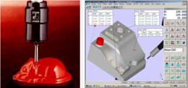
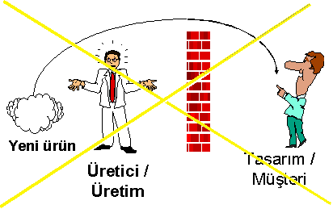
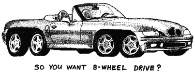
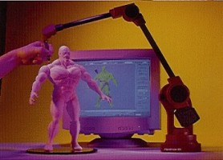
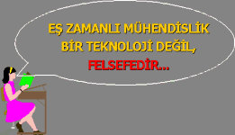
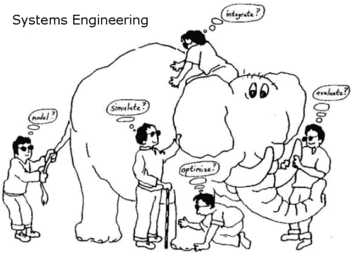

|
Doç.
Dr. Türkay Dereli, dereli@gantep.edu.tr
Doç. Dr. Adil Baykasoðlu, baykasoglu@gantep.edu.tr
Gaziantep Üniv., Endüstri Müh. Böl.
Nisan 2005*
ÖZET
Günümüz
global rekabet ortamý, üreticilerin ürünlerini tüketicilere
daha kaliteli, daha ucuz ve daha çabuk ulaþtýrmasýný bir zorunluluk
haline getirmiþtir. Bu zorunluluðu avantaja dönüþtürmek isteyen
iþletmelerin, ürün geliþtirme zamanýný (Product Development
Time) en aza indirgemesi gerekmektedir. Otoinþa ya da bir
baþka deyiþle Hýzlý Prototipleme (Rapid Prototyping) teknikleri
ile birlikte TERSÝNE MÜHENDÝSLÝK (Reverse Engineering)
yaklaþýmý, ürün geliþtirme zamanýnýn azaltýlmasý için iþletmelere
mükemmel Bileþik Mühendislik (Eþzamanlý Mühendislik) (Concurrent/Simultaneous
Engineering) fýrsatlarý sunar. Bu makalede, kýsaca bir tanýmý
verildikten sonra, tesine mühendislikte kullanýlan yöntem
ve teknikler, yazýlým ve donanýmlar tanýtýlmýþtýr. Ayrýca,
tesine mühendislik yaklaþýmýnýn ürün tasarýmýndaki yeri, önemi
ve potansiyel uygulamalarýndan örnekler verilmiþtir.
Anahtar Kelimeler:
Tersine
Mühendislik, Ürün Tasarýmý, Hýzlý Prototipleme, Koordinat
Ölçüm Sistemleri, Tarama (Scanning), Sayýsallaþtýrma (Digitization),
Bilgisayar Görüþ Sistemleri (Computer Vision Systems), Bileþik
Mühendislik (Concurrent Engineering).
GÝRÝÞ
Günümüzde
müþteriler daha kiþisel ve daha özelleþtirilmiþ ürünler talep
etmektedir. Müþteri ihtiyaçlarýndaki bu belirsizlik ve deðiþkenlik,
rekabet güçlerini artýrmak isteyen bir çok iþletmeyi yeni
üretim ve pazarlama stratejileri uygulamaya zorlamaktadýr.
Bu iþletmeler, müþteri ihtiyaçlarýný tatmin ederek kâr elde
etmek amacýyla geniþ bir ürün yelpazesiyle pazara hakim olmaya
çalýþmanýn yaný sýra, pazara sürekli yeni ürünler sunmaktadýr.
Sunulan bu ürünlerin kaliteli olmasý ve pazardaki yerlerini
en kýsa zamanda almasý ise iþletmelere rekabet açýsýndan büyük
avantajlar saðlamaktadýr. Bu koþullar altýnda varlýklarýný
sürdürmeye çalýþan iþletmeler, pazara küçük partiler halinde,
özelleþtirilmiþ, çok kaliteli ürünleri düþük maliyetler ile
sunmayý hedeflemektedir. Bu hedefi gerçekleþtirmek kolay olmadýðý
gibi, bu iþ için iþletmelerin kitlesel üretim ve yalýn üretimden
çok daha güçlü olan çevik, tepkisel ve bileþik üretim/yönetim
felsefelerine ihtiyaçlarý vardýr. Bu yüzden son zamanlarda
üretim dünyasýnda, müþteri isteklerine ve önceden kestirilemeyen
pazar deðiþikliklerine çok çabuk uyum saðlayabilecek; çevik,
tepkisel ve esnek üretim ve yönetim stratejileri, yöntemleri
ve paradigmalarý öne çýkmýþ bulunmaktadýr. Tasarýmdan üretime
ve üretimden de pazarlamaya deðin akýp giden tüm süreçlerin
her zaman baþlangýç noktasý olmasý nedeniyle, "ürün tasarýmý
ve geliþtirilmesi" alt süreci performansýnýn tüm bu modern
yöntemlerin baþarýlarýnda en büyük rolü oynadýðý anlaþýlmýþ
bulunmaktadýr. Ürün geliþtirme zamanýnýn azaltýlmasý; esnekliðin,
çabukluðun, çevikliðin ve tepkiselliðin bir ön þartý durumuna
gelmiþtir.


TERSÝNE
MÜHENDÝSLÝK (Reverse Engineering) yaklaþýmý, ürün geliþtirme
zamanýnýn azaltýlmasý için iþletmelere mükemmel bileþik (eþ
zamanlý) mühendislik (concurrent/simultaneous engineering)
fýrsatlarý sunar. Tesine mühendisliðin temel uygulamalarý
þu þekilde sýralanabilir;
- Yeni
bir parçanýn tasarýmý,
- Var
olan bir parçanýn kopyalanmasý,
- Yýpranmýþ
veya hasar görmüþ parçalarýn kurtarýlmasý, düzeltilmesi
ve yeniden tasarlanmasý
- Model
hassasiyetinin ve doðruluðunun geliþtirilmesi,
- Numerik
modellerin denetlenmesi.
Kavramsal
tasarým ile baþlayan geleneksel (Düz) mühendislik sürecinin
aksine, Tersine Mühendislik (Reverse Engineering) sürecinde
ürün tasarýmýna, gerçekte var olan bir modelin þekil bilgisinin
elde edilmesi ile baþlanýr. Serbest ve karmaþýk yüzeylere
sahip olan gerçek parçalarýn geometrik bilgisinin elde edilmesi
tesine mühendisliðin en önemli aþamalarýndan biridir. Yeniden
yapýlandýrýlacak parça modelinin kalitesi, baþlangýç modelinin
üzerine ölçülen noktalarýn sayýsýna, ölçüm tipine ve doðruluðuna,
ve ölçüm tekniðine (cihazýn cinsi vb) baðlý olarak deðiþebilir.
Aþaðýdaki
bölümlerde, mühendislik ve ürün tasarýmý dünyasýnýn, TERSÝNE
MÜHENDÝSLÝK penceresinden bir fotoðrafý sunulacak, ana elemanlarý
tanýtýlacak ve problemleri masaya yatýrýlacaktýr.
BÝLEÞÝK
MÜHENDÝSLÝK VE ÜRÜN TASARIMI TEKNOLOJÝLERÝ
Bileþik
(Eþzamanlý) Mühendislik, çeþitli mühendislik süreçlerinin,
geleneksel üretim anlayýþýndan farklý olarak, iþlemlerin sýrayla
yapýlmasý yerine, adýndan da anlaþýlacaðý gibi, ayný anda,
yani eþzamanlý olarak yapýlmasý esasýna dayanýr. Tüm tasarým
aþamalarý, üretimin fonksiyonel bir eniyileme elemaný konumundadýr.
Bu yöntem sayesinde, tasarýmcýlar ürünün erken üretim aþamalarýnda
görünüþ, tasarým ve üretim durumunu göz önünde tutma imkaný
bulurlar. Yani tasarým sürecinde tüm mühendislik çalýþmalarýný
ayný anda ve etkili bir þekilde yürütebilirler. Amerikan Savunma
Enstitüsü eþzamanlý mühendisliði þöyle tanýmlar:
"Ürünlerin
eþzamanlý ve entegre üretimi sýrasýnda ilgili iþlemleri, üretimi
ve üretim sonrasýnda servisi saðlayan bir disiplin."
Bu
yaklaþým üretimin her aþamasýndaki çalýþanlarý, üretim zincirinin
diðer birimlerinin dýþýnda tutmak yerine; kalite, maliyet
ve müþteri istekleri unsurlarýnýn tamamýný göz önünde tutmaya
yönlendirir. Bu üretim felsefesinin en büyük avantajý, problemleri
en aza indirmesidir. Tasarým aþamasýnda eþzamanlý mühendislik
prensipleriyle çalýþmak, üretilebilirliðe (prodüktivite) katkýda
bulunur ve maliyetleri düþürür. Amerika, Avrupa ve Japonya'da
yapýlan son çalýþmalar, fabrikadaki tasarým uygulamalarý,
araþtýrma-geliþtirme ve üretim zincirinin servis evreleriyle
birleþtirilmesine yöneliktir. Yani, eþzamanlý mühendisliðin
temel mantýðý olan "tasarým iþlemleri ile üretim planlarýný
ayný anda uygulama" ilkesi ile, müþteriye yönelik servis
imkanýný baðlama, amacý güdülmektedir.
Genel bir tanýmla mühendislik, "Bir þeyin nasýl doðru
bir yöntemle yapýlabileceðini öðreten ve bütünsel düþünmeyi
saðlayan düþünme sistemi" þeklinde tanýmlanýr ise, eþzamanlý
mühendisliðin tasarým ve üretim elemanlarýnýn ayný anda çalýþtýklarý
etkili bir yöntem olduðu rahatlýkla söylenebilir.

Eþ
zamanlý üretim felsefesinde genellikle þöyle bir iþlem sýrasý
vardýr. Baþta ihtiyaçlar temin edilir, ürün özellikleri belirlenir
ve tasarým mühendisleri üç boyutlu çalýþmalara baþlar. Hýzlý
prototipleme teknolojisi de kullanýlarak test için prototipler
üretilir, istenilen seviyeye ulaþýlýnca en son tasarým þekliyle
üretim yapýlýr. Bu aþamada prototiplerin uygun olup olmadýðýna
üretim mühendisleri karar verir. Bilinen bir gerçek þudur
ki, üretim; analizler, temel araþtýrma iþlemleri, kontrollü
deneyler, cesur kararlar ve birimler arasýnda iletiþimi gerektiren
zor bir süreçtir. Bu süreç ancak birkaç þekilde baþarýyla
tamamlanabilir. Bu baþarý ne tasarým ve üretim birimlerinin
sorumluluðu tek baþýna almasý; ne de faaliyetlerini birbirlerinin
prensiplerine göre yürütmesi ile kazanýlabilir. Baþarýya en
yakýn yol ise; birimlerin üretim sürecinde, etkili bir takým
çalýþmasý ile oluþturduklarý üretim mantýðýyla gidilecektir.
Eþzamanlý
mühendislik sistemi, üretim için birimlerin kararlarýyla birlikte
beklentilerinin sentezini de ister. Tasarým elemanlarýnýn
amaçlarý üründen bekleneni veren fonksiyonelliði saðlayan
özellikleri geliþtirmektir. Üretim birimleri ise yapýlan prototipin
özelliklerinde üretim için çalýþýrlar. Bununla beraber üretim
safhasýnda ki uygulamalar, her iki birimin ortak kararýyla
alýnýr.
Özet
olarak, eþzamanlý mühendislik, ürün henüz tasarým aþamasýnda
iken devreye girerek üretim problemlerini çözmek, ürün geliþtirme
ve üretim süresini kýsaltmaya yönelik bir üretim felsefesidir.
Bu disiplinde iki ana senaryo olduðunu düþünebiliriz. Biri,
ürün oluþturmak için yeni üretim sistemi planlamak, diðeri
ise üretim sistemi oluþturmak için bir ürünü tasarlamaktýr.
Fakat her iki yaklaþým da ürün ve üretim sistemi arasýndaki
karþýlýklý ve eþzamanlý araþtýrma-geliþtirme mantýðýna dayanýr.
Ürün
tasarýmý aþamasýnda, ürün fikrini somutlaþtýrmak için birçok
teknik uygulanabilir. Planlanan ürün her açýdan tasarlanýr
ve ileride oluþabilecek muhtemel tasarým hatalarýnýn önüne
geçilmeye çalýþýlýr. Böylece hatalý ürün üretilmesi daha tasarým
aþamasýnda engellenir. Ürün tasarýmý için, Tesine Mühendislik
teknolojileri kullanýlabilir, Bilgisayar Destekli Tasarým
(BDT) yazýlýmlarýyla bilgisayar ortamýnda görsel olarak çalýþmalar
yapýlabilir ve Bilgisayar Destekli Üretim (BDÜ) teknolojisi
sayesinde ürün verileri doðrudan üretim ortamýna aktarýlabilir.
Mevcut BDT bilgisinden yararlanarak Hýzlý Prototipleme ile
kýsa zaman içerisinde ürünün üç boyutlu modelleri elde edilebilir.
Bu þekilde tasarým daha görsel bir hale getirilir ve ürünün
tasarýmýnda yapýlan hatalarýn daha kolay farkýna varýlabilir.
Bilgisayar Destekli Mühendislik (BDM) teknolojileri ile üretim
ve üretim süreçleri benzeþtirilerek (simülasyon) üretim esnasýnda
karþýlaþýlabilecek problemler önceden kestirilebilir.
Bir
diðer eþzamanlý mühendislik yaklaþýmý olan X için Tasarým
(Design for X) kullanýlarak yeni ürün geliþtirme süreciyle
ilgili üretilebilirlik, test, servis yeteneði vb. kavramlar
tasarýmda ön plana çýkarýlabilir. Taguchi'nin Gürbüz Tasarýmý
(Robust Design) yaklaþýmý kullanýlarak ürün veya üretim süreci
en-iyilenebilir veya Modüler Tasarým ile karmaþýk ürünler
birbirinden baðýmsýz bileþenler olarak tasarlanabilir. Bunlarýn
yaný sýra, Tasarým Hata Türleri ve Etkileri Analizi (Failure
Mode and Effect Analysis) kullanýlarak tasarýmdaki muhtemel
hatalar bulunabilir ve hatalarýn nedenlerini ortadan kaldýrmak
için yapýlmasý gereken önleyici faaliyetlerin tespit edilmesi
saðlanabilir. Deðer Analizi (Value Analysis) kullanýlarak
ürünün kendinden bekleneni düþük maliyetle yapmasýný saðlayacak
malzeme, imal teknikleri ve üretim süreçleri bulunabilir ve
tasarýmdaki gereksiz unsurlar bu þekilde elenebilir.
Bütün
bu yöntemler ile birlikte, Daðýtýk Yapay Zeka Uygulamalarý
ile karmaþýk ve dinamik tasarýmlar birbirleriyle etkileþimli
ajanlar kullanýlarak oluþturulabilir. Burada, her ajan tasarýmda
üstüne düþeni yapar ve tasarýmcýyý optimum tasarýma götürebilir.
Tasarým ve üretim arasýnda çok güçlü bir entegrasyon aracý
ve ortak dil olan STEP standardý ise bütün tasarýmlarýn ortak
bir dille ifade edilmesine olanak saðladýðý için ürün tasarýmýnýn
vazgeçilmezleri arasýndaki yerini her geçen gün daha da saðlamlaþtýrmaktadýr.
Günümüz
üretim dünyasýnýn yükselen bir deðeri olan EÞZAMANLI MÜHENDÝSLÝK
felsefesi çerçevesinde kullanýlan ve yukarýda bir kýsmýna
deðinilen onlarca yöntem ve teknoloji içerisinde tasarlanan
modellerin görselleþtirilmesi ve ön modellerini elde edilmesi
büyük bir önem arz eder. Bunu saðlayan yetenekleri tasarýmcýlara
sunan TERSÝNE MÜHENDÝSLÝK ve ilgili teknolojilerinin doðru
anlaþýlmasý ve kullanýlmasý, tasarýmcýlarýn eline bir yol
haritasý verilmesi gereklidir. Bu makalenin sonraki bölümleri,
projektörleri TERSÝNE MÜHENDÝSLÝK üzerine çevirmektedir.
|